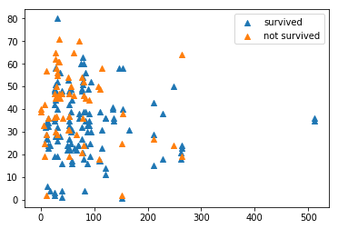
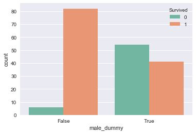

Predicting survival on the Titanic
Table of Contents
In this paper we look at the chances of surviving the Titanic using python. We predict the chances of an unseen set of data by using supervised machinelearning on the known dataset.
We use information from this site.
This is one of the first drafts to get to know the dataset and to experiment with the python and all the packages included.
1 Preparation
import numpy as np import pandas as pd import matplotlib.pyplot as plt import seaborn as sns
The adventure begins with importing the right packages. The dataset is downloaded from kaggle site as csv\_file. Next the data is read into a dataframe by using pandas' pd.read\_csv
data = pd.read_csv('titanic.csv')
Here we see the head of our dataframe. A couple of questions come to mind. Which variables play a role by determining the probability of surviving the Titanic. Sex and Cabin are not numeric values. How do we convert these to numeric values?
2 A first look at the dataset
data.head()
PassengerId Survived Pclass \
0 1 0 3
1 2 1 1
2 3 1 3
3 4 1 1
4 5 0 3
Name Sex Age SibSp \
0 Braund, Mr. Owen Harris male 22.0 1
1 Cumings, Mrs. John Bradley (Florence Briggs Th... female 38.0 1
2 Heikkinen, Miss. Laina female 26.0 0
3 Futrelle, Mrs. Jacques Heath (Lily May Peel) female 35.0 1
4 Allen, Mr. William Henry male 35.0 0
Parch Ticket Fare Cabin Embarked
0 0 A/5 21171 7.2500 NaN S
1 0 PC 17599 71.2833 C85 C
2 0 STON/O2. 3101282 7.9250 NaN S
3 0 113803 53.1000 C123 S
4 0 373450 8.0500 NaN S
| PassengerId | Survived | Pclass | Name | Sex | Age | SibSp | Parch | Ticket | Fare | Cabin | Embarked | |
|---|---|---|---|---|---|---|---|---|---|---|---|---|
| 0 | 1 | 0 | 3 | Braund, Mr. Owen Harris | male | 22.0 | 1 | 0 | A/5 21171 | 7.2500 | NaN | S |
| 1 | 2 | 1 | 1 | Cumings, Mrs. John Bradley (Florence Briggs Th... | female | 38.0 | 1 | 0 | PC 17599 | 71.2833 | C85 | C |
| 2 | 3 | 1 | 3 | Heikkinen, Miss. Laina | female | 26.0 | 0 | 0 | STON/O2. 3101282 | 7.9250 | NaN | S |
| 3 | 4 | 1 | 1 | Futrelle, Mrs. Jacques Heath (Lily May Peel) | female | 35.0 | 1 | 0 | 113803 | 53.1000 | C123 | S |
| 4 | 5 | 0 | 3 | Allen, Mr. William Henry | male | 35.0 | 0 | 0 | 373450 | 8.0500 | NaN | S |
<div> <style scoped> .dataframe tbody tr th:only-of-type { vertical-align: middle; }
.dataframe tbody tr th { vertical-align: top; }
.dataframe thead th { text-align: right; } </style> <table border="1" class="dataframe"> <thead> <tr style="text-align: right;"> <th></th> <th>PassengerId</th> <th>Survived</th> <th>Pclass</th> <th>Name</th> <th>Sex</th> <th>Age</th> <th>SibSp</th> <th>Parch</th> <th>Ticket</th> <th>Fare</th> <th>Cabin</th> <th>Embarked</th> </tr> </thead> <tbody> <tr> <th>0</th> <td>1</td> <td>0</td> <td>3</td> <td>Braund, Mr. Owen Harris</td> <td>male</td> <td>22.0</td> <td>1</td> <td>0</td> <td>A/5 21171</td> <td>7.2500</td> <td>NaN</td> <td>S</td> </tr> <tr> <th>1</th> <td>2</td> <td>1</td> <td>1</td> <td>Cumings, Mrs. John Bradley (Florence Briggs Th…</td> <td>female</td> <td>38.0</td> <td>1</td> <td>0</td> <td>PC 17599</td> <td>71.2833</td> <td>C85</td> <td>C</td> </tr> <tr> <th>2</th> <td>3</td> <td>1</td> <td>3</td> <td>Heikkinen, Miss. Laina</td> <td>female</td> <td>26.0</td> <td>0</td> <td>0</td> <td>STON/O2. 3101282</td> <td>7.9250</td> <td>NaN</td> <td>S</td> </tr> <tr> <th>3</th> <td>4</td> <td>1</td> <td>1</td> <td>Futrelle, Mrs. Jacques Heath (Lily May Peel)</td> <td>female</td> <td>35.0</td> <td>1</td> <td>0</td> <td>113803</td> <td>53.1000</td> <td>C123</td> <td>S</td> </tr> <tr> <th>4</th> <td>5</td> <td>0</td> <td>3</td> <td>Allen, Mr. William Henry</td> <td>male</td> <td>35.0</td> <td>0</td> <td>0</td> <td>373450</td> <td>8.0500</td> <td>NaN</td> <td>S</td> </tr> </tbody> </table> </div>
Here are the summary statistics of the dataframe. The mean, standarddeviation etc are given in this table.
data.describe()
PassengerId Survived Pclass Age SibSp \
count 891.000000 891.000000 891.000000 714.000000 891.000000
mean 446.000000 0.383838 2.308642 29.699118 0.523008
std 257.353842 0.486592 0.836071 14.526497 1.102743
min 1.000000 0.000000 1.000000 0.420000 0.000000
25% 223.500000 0.000000 2.000000 20.125000 0.000000
50% 446.000000 0.000000 3.000000 28.000000 0.000000
75% 668.500000 1.000000 3.000000 38.000000 1.000000
max 891.000000 1.000000 3.000000 80.000000 8.000000
Parch Fare
count 891.000000 891.000000
mean 0.381594 32.204208
std 0.806057 49.693429
min 0.000000 0.000000
25% 0.000000 7.910400
50% 0.000000 14.454200
75% 0.000000 31.000000
max 6.000000 512.329200
| PassengerId | Survived | Pclass | Age | SibSp | Parch | Fare | |
|---|---|---|---|---|---|---|---|
| count | 891.000000 | 891.000000 | 891.000000 | 714.000000 | 891.000000 | 891.000000 | 891.000000 |
| mean | 446.000000 | 0.383838 | 2.308642 | 29.699118 | 0.523008 | 0.381594 | 32.204208 |
| std | 257.353842 | 0.486592 | 0.836071 | 14.526497 | 1.102743 | 0.806057 | 49.693429 |
| min | 1.000000 | 0.000000 | 1.000000 | 0.420000 | 0.000000 | 0.000000 | 0.000000 |
| 25% | 223.500000 | 0.000000 | 2.000000 | 20.125000 | 0.000000 | 0.000000 | 7.910400 |
| 50% | 446.000000 | 0.000000 | 3.000000 | 28.000000 | 0.000000 | 0.000000 | 14.454200 |
| 75% | 668.500000 | 1.000000 | 3.000000 | 38.000000 | 1.000000 | 0.000000 | 31.000000 |
| max | 891.000000 | 1.000000 | 3.000000 | 80.000000 | 8.000000 | 6.000000 | 512.329200 |
<div> <style scoped> .dataframe tbody tr th:only-of-type { vertical-align: middle; }
.dataframe tbody tr th { vertical-align: top; }
.dataframe thead th { text-align: right; } </style> <table border="1" class="dataframe"> <thead> <tr style="text-align: right;"> <th></th> <th>PassengerId</th> <th>Survived</th> <th>Pclass</th> <th>Age</th> <th>SibSp</th> <th>Parch</th> <th>Fare</th> </tr> </thead> <tbody> <tr> <th>count</th> <td>891.000000</td> <td>891.000000</td> <td>891.000000</td> <td>714.000000</td> <td>891.000000</td> <td>891.000000</td> <td>891.000000</td> </tr> <tr> <th>mean</th> <td>446.000000</td> <td>0.383838</td> <td>2.308642</td> <td>29.699118</td> <td>0.523008</td> <td>0.381594</td> <td>32.204208</td> </tr> <tr> <th>std</th> <td>257.353842</td> <td>0.486592</td> <td>0.836071</td> <td>14.526497</td> <td>1.102743</td> <td>0.806057</td> <td>49.693429</td> </tr> <tr> <th>min</th> <td>1.000000</td> <td>0.000000</td> <td>1.000000</td> <td>0.420000</td> <td>0.000000</td> <td>0.000000</td> <td>0.000000</td> </tr> <tr> <th>25%</th> <td>223.500000</td> <td>0.000000</td> <td>2.000000</td> <td>20.125000</td> <td>0.000000</td> <td>0.000000</td> <td>7.910400</td> </tr> <tr> <th>50%</th> <td>446.000000</td> <td>0.000000</td> <td>3.000000</td> <td>28.000000</td> <td>0.000000</td> <td>0.000000</td> <td>14.454200</td> </tr> <tr> <th>75%</th> <td>668.500000</td> <td>1.000000</td> <td>3.000000</td> <td>38.000000</td> <td>1.000000</td> <td>0.000000</td> <td>31.000000</td> </tr> <tr> <th>max</th> <td>891.000000</td> <td>1.000000</td> <td>3.000000</td> <td>80.000000</td> <td>8.000000</td> <td>6.000000</td> <td>512.329200</td> </tr> </tbody> </table> </div>
It is possible to search for particular passenger in the dataset. Such as passengers who were older than eighty years.
data[data.Age == 80]
PassengerId Survived Pclass Name \
630 631 1 1 Barkworth, Mr. Algernon Henry Wilson
Sex Age SibSp Parch Ticket Fare Cabin Embarked
630 male 80.0 0 0 27042 30.0 A23 S
| PassengerId | Survived | Pclass | Name | Sex | Age | SibSp | Parch | Ticket | Fare | Cabin | Embarked | |
|---|---|---|---|---|---|---|---|---|---|---|---|---|
| 630 | 631 | 1 | 1 | Barkworth, Mr. Algernon Henry Wilson | male | 80.0 | 0 | 0 | 27042 | 30.0 | A23 | S |
<div> <style scoped> .dataframe tbody tr th:only-of-type { vertical-align: middle; }
.dataframe tbody tr th { vertical-align: top; }
.dataframe thead th { text-align: right; } </style> <table border="1" class="dataframe"> <thead> <tr style="text-align: right;"> <th></th> <th>PassengerId</th> <th>Survived</th> <th>Pclass</th> <th>Name</th> <th>Sex</th> <th>Age</th> <th>SibSp</th> <th>Parch</th> <th>Ticket</th> <th>Fare</th> <th>Cabin</th> <th>Embarked</th> </tr> </thead> <tbody> <tr> <th>630</th> <td>631</td> <td>1</td> <td>1</td> <td>Barkworth, Mr. Algernon Henry Wilson</td> <td>male</td> <td>80.0</td> <td>0</td> <td>0</td> <td>27042</td> <td>30.0</td> <td>A23</td> <td>S</td> </tr> </tbody> </table> </div>
3 First figures
To get a good impression of the dataset and the influence of the
variables, a couple of diagrams are made using mathplotlib.
plt.scatter(data.Age,data.Survived) plt.xlabel('Age') plt.ylabel('Survived')
Text(0,0.5,'Survived')

Scatterplots are not always the best choice to illustrate some of the variables. There is not much to say about the variance because of the fact that a lot of points are close to eachother. A couple of values however stand out. We see that a passenger or more passengers travelling first class have paid more than 500 pounds for their ticketprice.
plt.scatter(data.Pclass,data.Fare) plt.xlabel('Pclass') plt.ylabel('Fare')
Text(0,0.5,'Fare')

plt.scatter(data.Fare, data.Survived) plt.xlabel('Fare') plt.ylabel('Survived')
Text(0,0.5,'Survived')

plt.scatter(data.Fare, data.Age) plt.xlabel('Fare') plt.ylabel('Age')
Text(0,0.5,'Age')

I was curious to see who had paid more than 400 pounds for their ticket.
We see that it is easy to make a selection in our dataset using the >
sign
data[data.Fare > 400]
PassengerId Survived Pclass Name \
258 259 1 1 Ward, Miss. Anna
679 680 1 1 Cardeza, Mr. Thomas Drake Martinez
737 738 1 1 Lesurer, Mr. Gustave J
Sex Age SibSp Parch Ticket Fare Cabin Embarked
258 female 35.0 0 0 PC 17755 512.3292 NaN C
679 male 36.0 0 1 PC 17755 512.3292 B51 B53 B55 C
737 male 35.0 0 0 PC 17755 512.3292 B101 C
| PassengerId | Survived | Pclass | Name | Sex | Age | SibSp | Parch | Ticket | Fare | Cabin | Embarked | |
|---|---|---|---|---|---|---|---|---|---|---|---|---|
| 258 | 259 | 1 | 1 | Ward, Miss. Anna | female | 35.0 | 0 | 0 | PC 17755 | 512.3292 | NaN | C |
| 679 | 680 | 1 | 1 | Cardeza, Mr. Thomas Drake Martinez | male | 36.0 | 0 | 1 | PC 17755 | 512.3292 | B51 B53 B55 | C |
| 737 | 738 | 1 | 1 | Lesurer, Mr. Gustave J | male | 35.0 | 0 | 0 | PC 17755 | 512.3292 | B101 | C |
<div> <style scoped> .dataframe tbody tr th:only-of-type { vertical-align: middle; }
.dataframe tbody tr th { vertical-align: top; }
.dataframe thead th { text-align: right; } </style> <table border="1" class="dataframe"> <thead> <tr style="text-align: right;"> <th></th> <th>PassengerId</th> <th>Survived</th> <th>Pclass</th> <th>Name</th> <th>Sex</th> <th>Age</th> <th>SibSp</th> <th>Parch</th> <th>Ticket</th> <th>Fare</th> <th>Cabin</th> <th>Embarked</th> </tr> </thead> <tbody> <tr> <th>258</th> <td>259</td> <td>1</td> <td>1</td> <td>Ward, Miss. Anna</td> <td>female</td> <td>35.0</td> <td>0</td> <td>0</td> <td>PC 17755</td> <td>512.3292</td> <td>NaN</td> <td>C</td> </tr> <tr> <th>679</th> <td>680</td> <td>1</td> <td>1</td> <td>Cardeza, Mr. Thomas Drake Martinez</td> <td>male</td> <td>36.0</td> <td>0</td> <td>1</td> <td>PC 17755</td> <td>512.3292</td> <td>B51 B53 B55</td> <td>C</td> </tr> <tr> <th>737</th> <td>738</td> <td>1</td> <td>1</td> <td>Lesurer, Mr. Gustave J</td> <td>male</td> <td>35.0</td> <td>0</td> <td>0</td> <td>PC 17755</td> <td>512.3292</td> <td>B101</td> <td>C</td> </tr> </tbody> </table> </div>
df_cleaned = data.dropna() df_cleaned['male_dummy'] = (df_cleaned.Sex == 'male') #nieuwe kolom definiëren om male te veranderen in een boolean X = df_cleaned[['Age','male_dummy', 'Pclass', 'SibSp', 'Fare']] y = df_cleaned[['Survived']]
/Users/myrthe/anaconda3/lib/python3.6/site-packages/ipykernel_launcher.py:2: SettingWithCopyWarning: A value is trying to be set on a copy of a slice from a DataFrame. Try using .loc[row_indexer,col_indexer] = value instead See the caveats in the documentation: http://pandas.pydata.org/pandas-docs/stable/indexing.html#indexing-view-versus-copy
Here we see that we clean our dataset for the first time to make it more
suitable for the packages we will be using. All rows with missing values
(these are called NaNs, short for Not a Number) are deleted for
scikit\_learn can't work with NaNs by using .dropna(). There are other
ways than deleting rows to handle this problem. Replace the NaNs with
the mean or to interpolate for example. However the choice was made to
delete these rows. Furthermore we see that the problem of the Sex
column not being a numeric value is handled. The values in the Sex
column are changed into a boolean. Males are given a True and the
females are given a False. Next a couple of variables have added to
X. Age,=male_dummy=, Pclass, SibSp, Fare are all numeric
values and therefore easy to use.
Here we see the cleaned dataframe with the new added column male_dummy
df_cleaned.head()
PassengerId Survived Pclass \
1 2 1 1
3 4 1 1
6 7 0 1
10 11 1 3
11 12 1 1
Name Sex Age SibSp \
1 Cumings, Mrs. John Bradley (Florence Briggs Th... female 38.0 1
3 Futrelle, Mrs. Jacques Heath (Lily May Peel) female 35.0 1
6 McCarthy, Mr. Timothy J male 54.0 0
10 Sandstrom, Miss. Marguerite Rut female 4.0 1
11 Bonnell, Miss. Elizabeth female 58.0 0
Parch Ticket Fare Cabin Embarked male_dummy
1 0 PC 17599 71.2833 C85 C False
3 0 113803 53.1000 C123 S False
6 0 17463 51.8625 E46 S True
10 1 PP 9549 16.7000 G6 S False
11 0 113783 26.5500 C103 S False
| PassengerId | Survived | Pclass | Name | Sex | Age | SibSp | Parch | Ticket | Fare | Cabin | Embarked | male_dummy | |
|---|---|---|---|---|---|---|---|---|---|---|---|---|---|
| 1 | 2 | 1 | 1 | Cumings, Mrs. John Bradley (Florence Briggs Th... | female | 38.0 | 1 | 0 | PC 17599 | 71.2833 | C85 | C | False |
| 3 | 4 | 1 | 1 | Futrelle, Mrs. Jacques Heath (Lily May Peel) | female | 35.0 | 1 | 0 | 113803 | 53.1000 | C123 | S | False |
| 6 | 7 | 0 | 1 | McCarthy, Mr. Timothy J | male | 54.0 | 0 | 0 | 17463 | 51.8625 | E46 | S | True |
| 10 | 11 | 1 | 3 | Sandstrom, Miss. Marguerite Rut | female | 4.0 | 1 | 1 | PP 9549 | 16.7000 | G6 | S | False |
| 11 | 12 | 1 | 1 | Bonnell, Miss. Elizabeth | female | 58.0 | 0 | 0 | 113783 | 26.5500 | C103 | S | False |
<div> <style scoped> .dataframe tbody tr th:only-of-type { vertical-align: middle; }
.dataframe tbody tr th { vertical-align: top; }
.dataframe thead th { text-align: right; } </style> <table border="1" class="dataframe"> <thead> <tr style="text-align: right;"> <th></th> <th>PassengerId</th> <th>Survived</th> <th>Pclass</th> <th>Name</th> <th>Sex</th> <th>Age</th> <th>SibSp</th> <th>Parch</th> <th>Ticket</th> <th>Fare</th> <th>Cabin</th> <th>Embarked</th> <th>male_dummy</th> </tr> </thead> <tbody> <tr> <th>1</th> <td>2</td> <td>1</td> <td>1</td> <td>Cumings, Mrs. John Bradley (Florence Briggs Th…</td> <td>female</td> <td>38.0</td> <td>1</td> <td>0</td> <td>PC 17599</td> <td>71.2833</td> <td>C85</td> <td>C</td> <td>False</td> </tr> <tr> <th>3</th> <td>4</td> <td>1</td> <td>1</td> <td>Futrelle, Mrs. Jacques Heath (Lily May Peel)</td> <td>female</td> <td>35.0</td> <td>1</td> <td>0</td> <td>113803</td> <td>53.1000</td> <td>C123</td> <td>S</td> <td>False</td> </tr> <tr> <th>6</th> <td>7</td> <td>0</td> <td>1</td> <td>McCarthy, Mr. Timothy J</td> <td>male</td> <td>54.0</td> <td>0</td> <td>0</td> <td>17463</td> <td>51.8625</td> <td>E46</td> <td>S</td> <td>True</td> </tr> <tr> <th>10</th> <td>11</td> <td>1</td> <td>3</td> <td>Sandstrom, Miss. Marguerite Rut</td> <td>female</td> <td>4.0</td> <td>1</td> <td>1</td> <td>PP 9549</td> <td>16.7000</td> <td>G6</td> <td>S</td> <td>False</td> </tr> <tr> <th>11</th> <td>12</td> <td>1</td> <td>1</td> <td>Bonnell, Miss. Elizabeth</td> <td>female</td> <td>58.0</td> <td>0</td> <td>0</td> <td>113783</td> <td>26.5500</td> <td>C103</td> <td>S</td> <td>False</td> </tr> </tbody> </table> </div>
from sklearn.linear_model import LogisticRegression logreg = LogisticRegression() logreg.fit(X, y) y_pred = logreg.predict(X)
/Users/myrthe/anaconda3/lib/python3.6/site-packages/sklearn/utils/validation.py:578: DataConversionWarning: A column-vector y was passed when a 1d array was expected. Please change the shape of y to (n_samples, ), for example using ravel(). y = column_or_1d(y, warn=True)
Here we initialize the first regression called logistic regression. We don't split our dataframe in test and training set yet. For a general indication we only use the regressor and fit it on the cleaned dataset. After that we predict on the same dataset.
logreg.coef_
array([[-0.01636209, -2.08109476, 0.01318695, 0.2035389 , 0.00296447]])
Here we see the outcome of our first try with the logistic regression.
To interpret these coefficients, let's look at the order of the columns
in X:
X.head()
Age male_dummy Pclass SibSp Fare
1 38.0 False 1 1 71.2833
3 35.0 False 1 1 53.1000
6 54.0 True 1 0 51.8625
10 4.0 False 3 1 16.7000
11 58.0 False 1 0 26.5500
| Age | male_dummy | Pclass | SibSp | Fare | |
|---|---|---|---|---|---|
| 1 | 38.0 | False | 1 | 1 | 71.2833 |
| 3 | 35.0 | False | 1 | 1 | 53.1000 |
| 6 | 54.0 | True | 1 | 0 | 51.8625 |
| 10 | 4.0 | False | 3 | 1 | 16.7000 |
| 11 | 58.0 | False | 1 | 0 | 26.5500 |
<div> <style scoped> .dataframe tbody tr th:only-of-type { vertical-align: middle; }
.dataframe tbody tr th { vertical-align: top; }
.dataframe thead th { text-align: right; } </style> <table border="1" class="dataframe"> <thead> <tr style="text-align: right;"> <th></th> <th>Age</th> <th>male_dummy</th> <th>Pclass</th> <th>SibSp</th> <th>Fare</th> </tr> </thead> <tbody> <tr> <th>1</th> <td>38.0</td> <td>False</td> <td>1</td> <td>1</td> <td>71.2833</td> </tr> <tr> <th>3</th> <td>35.0</td> <td>False</td> <td>1</td> <td>1</td> <td>53.1000</td> </tr> <tr> <th>6</th> <td>54.0</td> <td>True</td> <td>1</td> <td>0</td> <td>51.8625</td> </tr> <tr> <th>10</th> <td>4.0</td> <td>False</td> <td>3</td> <td>1</td> <td>16.7000</td> </tr> <tr> <th>11</th> <td>58.0</td> <td>False</td> <td>1</td> <td>0</td> <td>26.5500</td> </tr> </tbody> </table> </div>
4 Graphic illustration of a prediction
One of the first graphic illustrations of the relation between fare, age and survival. The relation is not very clear but we see that the higher the fare the more people survived and the higher the age the less people survived. However, this figure is not very accurate, because of the fact that only three variables were used.
survived = df_cleaned[df_cleaned.Survived == 1] not_survived = df_cleaned[df_cleaned.Survived == 0] plt.scatter(survived.Fare, survived.Age, marker='^', label = 'survived') plt.scatter(not_survived.Fare, not_survived.Age, marker='^', label = 'not survived') plt.legend()

P = df_cleaned[['Pclass', 'Fare','Age','male_dummy']]
We select from our df\_cleaned only the columns with numeric values. This is convenient for the splitting into train and testsets, for scikit\_learn can only work with numbers. Difference between P and X here is that X also has the column siblings, whereas P only has four columns
P.head()
Pclass Fare Age male_dummy
1 1 71.2833 38.0 False
3 1 53.1000 35.0 False
6 1 51.8625 54.0 True
10 3 16.7000 4.0 False
11 1 26.5500 58.0 False
| Pclass | Fare | Age | male_dummy | |
|---|---|---|---|---|
| 1 | 1 | 71.2833 | 38.0 | False |
| 3 | 1 | 53.1000 | 35.0 | False |
| 6 | 1 | 51.8625 | 54.0 | True |
| 10 | 3 | 16.7000 | 4.0 | False |
| 11 | 1 | 26.5500 | 58.0 | False |
<div> <style scoped> .dataframe tbody tr th:only-of-type { vertical-align: middle; }
.dataframe tbody tr th { vertical-align: top; }
.dataframe thead th { text-align: right; } </style> <table border="1" class="dataframe"> <thead> <tr style="text-align: right;"> <th></th> <th>Pclass</th> <th>Fare</th> <th>Age</th> <th>male_dummy</th> </tr> </thead> <tbody> <tr> <th>1</th> <td>1</td> <td>71.2833</td> <td>38.0</td> <td>False</td> </tr> <tr> <th>3</th> <td>1</td> <td>53.1000</td> <td>35.0</td> <td>False</td> </tr> <tr> <th>6</th> <td>1</td> <td>51.8625</td> <td>54.0</td> <td>True</td> </tr> <tr> <th>10</th> <td>3</td> <td>16.7000</td> <td>4.0</td> <td>False</td> </tr> <tr> <th>11</th> <td>1</td> <td>26.5500</td> <td>58.0</td> <td>False</td> </tr> </tbody> </table> </div>
from sklearn.linear_model import LogisticRegression logreg = LogisticRegression(fit_intercept=True) logreg.fit(P, y) y_pred = logreg.predict(P)
/Users/myrthe/anaconda3/lib/python3.6/site-packages/sklearn/utils/validation.py:578: DataConversionWarning: A column-vector y was passed when a 1d array was expected. Please change the shape of y to (n_samples, ), for example using ravel(). y = column_or_1d(y, warn=True)
We fit our regressor on our dataset and predict on that same dataset. Once again without splitting into train and testset. Just to get a general idea about the values of the coeffecients.
logreg.coef_
array([[ 0.00917324, 0.00337838, -0.01693475, -2.07643966]])
One could interpret the found coeffecients as follows: The coeffecients for class and fare are positive, which may indicate that the higher the class and price paid for a ticket, the higher the chance of surviving the Titanic. When we look at age and sex we see the exact opposite for the coeffecients are negative. The higher the age the lower your chances and if you were a man on board of the titanic your chances of surviving were lower.
from sklearn.neighbors import KNeighborsClassifier
Another regression is used in the following lines. (explanation K nearest neighbours)
knn = KNeighborsClassifier(n_neighbors=6)
knn.fit(P,y)
/Users/myrthe/anaconda3/lib/python3.6/site-packages/ipykernel_launcher.py:1: DataConversionWarning: A column-vector y was passed when a 1d array was expected. Please change the shape of y to (n_samples, ), for example using ravel(). """Entry point for launching an IPython kernel.
KNeighborsClassifier(algorithm='auto', leaf_size=30, metric='minkowski',
metric_params=None, n_jobs=1, n_neighbors=6, p=2,
weights='uniform')
prediction = knn.predict(P)
P.shape
(183, 4)
print('Prediction{}'.format(prediction))
Prediction[1 0 0 1 0 1 1 1 1 0 0 1 1 1 1 0 1 1 1 1 1 1 1 1 1 1 1 0 0 1 1 1 0 1 1 1 1 1 1 1 1 1 1 0 1 1 0 1 1 1 1 1 1 1 1 1 1 1 1 1 1 1 1 1 1 0 1 1 1 0 1 1 1 1 1 1 1 1 1 1 1 1 1 1 1 1 1 1 0 1 0 0 1 0 1 1 1 0 0 1 1 1 1 1 0 1 1 1 0 1 1 0 1 0 0 0 1 1 1 0 1 1 1 1 1 1 1 0 1 0 0 1 1 0 0 0 1 1 1 1 1 0 0 1 1 0 1 1 1 1 1 1 1 1 1 1 0 1 1 1 1 1 0 1 1 1 0 1 1 0 0 0 1 1 1 1 1 1 1 0 1 1 1]
Here we see one of our first predictions. 1 indicates the passenger has survived and 0 indicates that the passenger has died
Elke persoon heeft andere karakteristieken, dus dit zijn voorspellingen per persoon. Dus er komt een kans uit en dan kijkt de regressor, boven of onder 0.5
knn.score(P,y)
0.7486338797814208
This score gives a number between 0 and 1 and gives an impression of the accuracy of our model. However, this accuracy is not an indication of how well our model performs (explanation spam mail etc.)
P.head()
Pclass Fare Age male_dummy
1 1 71.2833 38.0 False
3 1 53.1000 35.0 False
6 1 51.8625 54.0 True
10 3 16.7000 4.0 False
11 1 26.5500 58.0 False
| Pclass | Fare | Age | male_dummy | |
|---|---|---|---|---|
| 1 | 1 | 71.2833 | 38.0 | False |
| 3 | 1 | 53.1000 | 35.0 | False |
| 6 | 1 | 51.8625 | 54.0 | True |
| 10 | 3 | 16.7000 | 4.0 | False |
| 11 | 1 | 26.5500 | 58.0 | False |
<div> <style scoped> .dataframe tbody tr th:only-of-type { vertical-align: middle; }
.dataframe tbody tr th { vertical-align: top; }
.dataframe thead th { text-align: right; } </style> <table border="1" class="dataframe"> <thead> <tr style="text-align: right;"> <th></th> <th>Pclass</th> <th>Fare</th> <th>Age</th> <th>male_dummy</th> </tr> </thead> <tbody> <tr> <th>1</th> <td>1</td> <td>71.2833</td> <td>38.0</td> <td>False</td> </tr> <tr> <th>3</th> <td>1</td> <td>53.1000</td> <td>35.0</td> <td>False</td> </tr> <tr> <th>6</th> <td>1</td> <td>51.8625</td> <td>54.0</td> <td>True</td> </tr> <tr> <th>10</th> <td>3</td> <td>16.7000</td> <td>4.0</td> <td>False</td> </tr> <tr> <th>11</th> <td>1</td> <td>26.5500</td> <td>58.0</td> <td>False</td> </tr> </tbody> </table> </div>
q = df_cleaned.Survived
q.head()
1 1 3 1 6 0 10 1 11 1 Name: Survived, dtype: int64
from sklearn.linear_model import LogisticRegression
from sklearn.model_selection import train_test_split
logreg = LogisticRegression() P_train, P_test, q_train, q_test = train_test_split(P,q, test_size=0.2, random_state=42) logreg.fit(P_train, q_train) q_pred = logreg.predict(P_test)
Here we see the dataset being split into a test and a training set. The arguments give us information about how much of our data we use as a test\_set and how much of our data we use as a training\_set. This and the parameters will be varied to see which parameter gives the best prediction. We fit our regressor on the training\_set and predict on the test\_set.
print('Prediction {}'.format(q_pred))
Prediction [1 1 1 0 0 0 1 1 1 0 0 1 0 1 0 0 1 0 0 1 1 1 0 1 0 1 1 0 1 1 1 1 0 1 1 1 1]
P_train.head()
Pclass Fare Age male_dummy
331 1 28.5000 45.5 True
336 1 66.6000 29.0 True
193 2 26.0000 3.0 True
75 3 7.6500 25.0 True
248 1 52.5542 37.0 True
| Pclass | Fare | Age | male_dummy | |
|---|---|---|---|---|
| 331 | 1 | 28.5000 | 45.5 | True |
| 336 | 1 | 66.6000 | 29.0 | True |
| 193 | 2 | 26.0000 | 3.0 | True |
| 75 | 3 | 7.6500 | 25.0 | True |
| 248 | 1 | 52.5542 | 37.0 | True |
<div> <style scoped> .dataframe tbody tr th:only-of-type { vertical-align: middle; }
.dataframe tbody tr th { vertical-align: top; }
.dataframe thead th { text-align: right; } </style> <table border="1" class="dataframe"> <thead> <tr style="text-align: right;"> <th></th> <th>Pclass</th> <th>Fare</th> <th>Age</th> <th>male_dummy</th> </tr> </thead> <tbody> <tr> <th>331</th> <td>1</td> <td>28.5000</td> <td>45.5</td> <td>True</td> </tr> <tr> <th>336</th> <td>1</td> <td>66.6000</td> <td>29.0</td> <td>True</td> </tr> <tr> <th>193</th> <td>2</td> <td>26.0000</td> <td>3.0</td> <td>True</td> </tr> <tr> <th>75</th> <td>3</td> <td>7.6500</td> <td>25.0</td> <td>True</td> </tr> <tr> <th>248</th> <td>1</td> <td>52.5542</td> <td>37.0</td> <td>True</td> </tr> </tbody> </table> </div>
from sklearn.metrics import roc_auc_score q_pred_prob = logreg.predict_proba(P_test)[:,1] roc_auc_score(q_test, q_pred_prob)
0.8416149068322981
When the test\_size is changed from 0.4 to 0.2 , the score increases with more than 10%. This makes sense because a smaller test\_set gives a higher accuracy score.
from sklearn.model_selection import cross_val_score cv_scores = cross_val_score(logreg, P, q, cv=5, scoring='roc_auc') print(cv_scores)
[0.86666667 0.80333333 0.74666667 0.73263889 0.92361111]
len(P)
183
len(prediction)
183
Seaborn countplot option? plt.figure()
sns.countplot(x='education', hue='party', data=df, palette='RdBu')
plt.xticks([0,1], ['No', 'Yes']) plt.show()
Given all the variables (age, gender, place of boarding etc.), you make a linear function (a1x1+a2x2+anxn+b). Computer puts this in the logistic function for x. For a particular x, you get a value between zero and one. This is your chance of survival. Boundary is 0,5. X < 0,5 passenger didn't survive. Computer tries to plot a logistic function where R2 is as small as possible. This is called the fitting process. The logistic function has to be as close to the datapoints as possible.
sns.countplot?
sns.set(style="darkgrid") ax = sns.countplot(x="Pclass",hue="Survived", data=data, palette="Set3")

More people in class 3 than in class 1, makes it difficult to compare and draw a conclusion. Percentage? In general, we cannot draw a conclusion regarding survival probabilities because there were more people in class 3 than in one 1. In the third class, more passengers died than survived. In the first class, more people survived than perished. We cannot compare the results from the first class to the third class. The plot only shows us one variable. This is another reason why we cannot be sure about the influence of class on the chance of survival. Simpson paradox
sns.set(style="darkgrid") ax = sns.countplot(x="Age",hue="Survived", data=data, palette="Set1")

sns.set(style="darkgrid") ax = sns.countplot(x="Fare",hue="Survived", data=data)

sns.set(style="darkgrid") ax = sns.countplot(x="male_dummy",hue="Survived", data=df_cleaned, palette="Set2")
